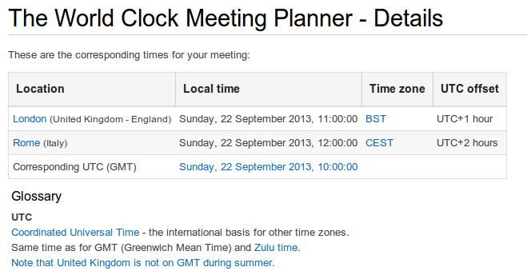

As i've been asked to fix the issue of e-meeting , let me say there isn't any solution. You shouldn't trust electronic calendar if you're not in the same time-zone of sender.
Here are some reasons why time zone changes can be quite complicated:
- Every year, a lot of countries switch between Standard Time (ST) and Daylight Saving Time (DST), and, unfortunately, they don’t do it at the same time. For example, in 2011, Europe switched back from DST to ST on Oct 30, while the continental U.S. switched on Nov 6. This means that the standard 5 hours difference between New York and London was 4 hours between Oct 30 and Nov 6.
- Every year, several countries decide to change their time zones or DST rules entirely. Recent examples include Russia, Chile, Belarus, and Egypt. Moscow used to be UTC+3 in the winter and UTC+4 during the summer, but when Russia decided to stay away from DST as of November 2011, Moscow became UTC+4 all year round.
In June we have:
Rome: UTC+2h London: UTC+1h
While in February we have:
Rome: UTC+1h London: UTC
My suggestion if you have to define a meeting Rome/London is to use e-mail and standard utc.
from www.timeanddate.com
Following a screenshot for a meeting Rome/London on 22 Sept 2013 - 10:00 UTC:
Here a link to check current time time.is
Check this before to organize a meeting Meeting Planner

Comments
comments powered by Disqus